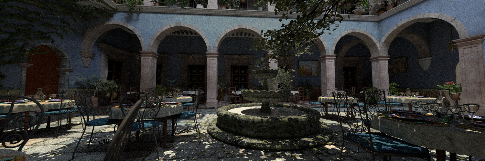

Simple Open-source Ray Tracing
View on Github
SORT, short for Simple Open-source Ray Tracing, is my personal cross platform ray tracing renderer. It is a standalone ray tracing program, while works well in Blender as a renderer plugin. Simliar to other open source ray tracer, like PBRT, luxrenderer, SORT is also a physically based renderer. However, since it is a solo project that I worked on in my spare time, it is way simpler comparing with others.
Following features are implemented in SORT,
- Integrator. (Whitted ray tracing, direct lighting, path tracing, light tracing, bidirectional path tracing, instant radiosity, ambient occlusion).
- Spatial acceleration structure. (OBVH, QBVH, BVH, KD-Tree, Uniform grid, OcTree)
- BXDF. (Disney BRDF, Lambert, LambertTransmission, Oran Nayar, MicroFacet Reflection, Microfacet Transmission, MERL, Fourier, AshikhmanShirley, Modified Phong, Coat, Blend, Double-Sided, Distribution BRDF, DreamWorks Fabric BRDF, Transparent).
- Subsurface Scattering.
- Fur, Hair.
- Volumetric Rendering.
- Tiny Shading Language
- Depth of Field.
- Multi-thread rendering, SIMD(SSE,AVX) Optimized.
- Blender 2.8 Plugin.
- Cross-platform (Windows, Ubuntu, MacOS).
Copyright© 2011-2020 Jiayin Cao. All rights reserved.